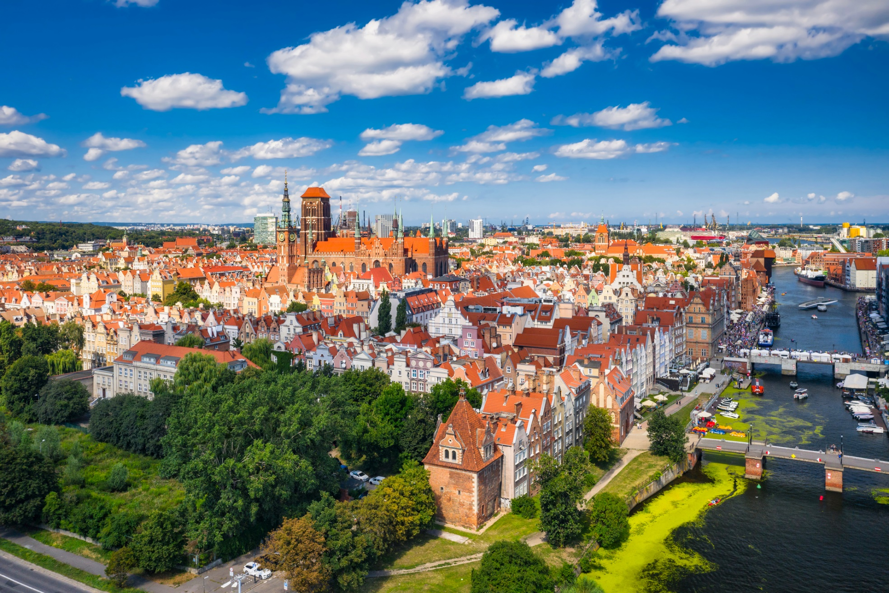

Digital Public Administration factsheet 2023
Poland


Digital Public Administration factsheet 2023
Poland

Digital Public Administration factsheet 2023
Poland

1 Interoperability State of Play 4
2 Digital Public Administration Political Communications 8
3 Digital Public Administration Legislation 19
4 Digital Public Administration Infrastructure 30
5 Digital Public Administration Governance 44
6 Cross-border Digital Public Administration Services 47
1
Interoperability State-of-Play
In 2017, the European Commission published the European Interoperability Framework (EIF) to give specific guidance on how to set up interoperable digital public services through a set of 47 recommendations divided in three pillars. The EIF Monitoring Mechanism (MM) was built on these pillars to evaluate the level of implementation of the framework within the Member States. Whereas during the previous, the MM relied upon three scoreboards, the 2022 edition includes an additional scoreboard on cross-border interoperability, assessing the level of implementation of 35 Recommendations. The mechanism is based on a set of 91 Key Performance Indicators (KPIs) clustered within the four scoreboards (Principles, Layers, Conceptual model and Cross-border interoperability), outlined below.
Source: European Interoperability Framework Monitoring Mechanism 2022
Each scoreboard breaks down the results into thematic areas (i.e. principles). The thematic areas are evaluated on a scale from one to four, where one means a lower level of implementation and four means a higher level of implementation. The graphs below show the result of the EIF MM data collection exercise for Poland in 2022, comparing it with the EU average as well as the performance of the country in 2021.
Source: European Interoperability Framework Monitoring Mechanism 2022
Poland’s results in Scoreboard 1 show an overall good implementation of the EIF Principles, scoring at the European average for all principles, except for Principle 3 (Transparency) and Principle 10 (Administrative simplification) that score below the EU average. Poland’s performance on Principle 1 increased since 2021, scoring above the EU average for this Principle. Possible areas of improvements are particularly concentrated in Principle 9 (Multilingualism) for which the score of 3 shows a medium performance in the implementation of corresponding recommendations. Indeed, the country could invest more efforts in information systems and technical architectures that cater for multilingualism when establishing a European public service (Principle 9 – Recommendation 16), so as to reach a higher score in this Principle.
Source: European Interoperability Framework Monitoring Mechanism 2022
The Polish results for the implementation of interoperability layers assessed for Scoreboard 2 show an overall a strong performance with scores of 3 on interoperability governance and a score of 4 on the other layers. Potential areas of improvement to enhance the country’s implementation of the recommendations under Scoreboard 2 are concentrated in the areas of interoperability governance. More specifically, the score of 1 for Poland in Recommendation 23 could be improved by further consulting relevant catalogues of standards, specifications and guidelines at national and EU level when procuring and developing IT solutions.
Source: European Interoperability Framework Monitoring Mechanism 2022
Poland’s scores assessing the Conceptual Model in Scoreboard 3 show a good performance, globally aligned with the European average, in the implementation of recommendations associated with all indicators of the conceptual model, expect for catalogues (no data). Poland’s scores increased for two principles since 2021: internal information sources and services (from one to four) and Security and Privacy (from three to four). However, there is room for improvement with regard to recommendations associated with external information sources and services. More specifically, the lack of use of external information sources and services while developing European public services (Recommendation 45) hinders the overall Polish score with regard to external information sources and services.
Source: European Interoperability Framework Monitoring Mechanism 2022
Poland’s results on Cross-Border Interoperability in Scoreboard 4 show a medium performance of the country, as well as missing data for multiple indicators. Based on the available data, Poland reaches the maximum score of four for three principles, for legal and technical interoperability, as well as open data and security and privacy. However, Poland has still margin for improvement in relation to two main indicators where the country obtains a lower performance: Principle 10 (Administrative simplification – Cross-border) and Internal information sources and services, which both scores below the EU average. To improve its performance on Principles 10, Poland’s efforts could focus on simplifying processes and using digital channels whenever appropriate for the delivery of European public services, to respond promptly and with high quality to users’ requests and reduce the administrative burden on public administrations, businesses and citizens (Recommendation 17).
Additional information on Poland’s results on the EIF Monitoring Mechanism is available online through interactive dashboards.
Curious about the state-of-play on digital public administrations in this country? Please find here some relevant indicators and resources on this topic: |

2
Digital Public Administration Political Communications
Berlin Declaration on Digital Society and Value-Based Digital Government
In December 2020, the Polish government signed the Berlin Declaration on Digital Society and Value-Based Digital Government, thus re-affirming its commitment – together with other European Union (EU) Member States – to foster digital transformation in order to allow citizens and businesses to harness the benefits and opportunities offered by modern digital technologies. The Declaration aims to contribute to a value-based digital transformation by addressing and strengthening digital participation and digital inclusion in European societies.
Strategy for Responsible Development
The Strategy for Responsible Development for the period up to 2020 (including the perspective up to 2030) sets basic conditions, objectives and directions for the country development in social, economic, environmental and territorial terms for 2020 and 2030. The main objective of the strategy is to create the conditions for an increase in the income of Polish citizens while improving social, economic, environmental and territorial cohesion. The key indicators of the strategy include the growth of Polish gross domestic product (GDP) per capita up to 95% of the EU28 average by 2030, and a drop in the risk of poverty and social exclusion indicator to 17 by 2030.
Ensuring a high and stable growth rate will be facilitated by the implementation of the following measures among others:
The main objectives include eGovernment measures, particularly those involving the effective use of information and communication technologies (ICT) in the public administration. The concept of eGovernment and digital public services implies that high-quality services for citizens, including entrepreneurs, are to be provided by modern information technology (IT) solutions supporting a logical and coherent government IT system, developed and maintained with the cooperation of all actors at various levels of public administration.
A priority task in the field of eGovernment is to allow the widest possible range of public services to be provided digitally, thereby enabling citizens to handle their businesses remotely. To that end, it will be necessary to ensure the interoperability of public IT systems and to computerise the internal processes of the administration.
In this field, the strategy sets out the following measures:
Other elements link this strategy to the European Commission’s Digital Single Market Strategy, whose implementation is governed and monitored be the Ministry of Digital Affairs.
Operational Programme Digital Poland 2014–2020 and European Funds for Digital Development 2021–2027
The aim of the Operational Programme (OP) Digital Poland 2014–2020, which is to be implemented until the end of 2023, is to strengthen the foundations for the development of a digital country, including broad access to high-speed internet, efficient and user-friendly public eServices, and an ever-increasing level of digital literacy in society.
This programme acknowledged that Poland was significantly lagging behind other Member States in the use of the development potential of ICT. In particular, the Council took note of:
The report recommended the development of broadband networks, and an improvement in the quality and efficiency of public services through digitalisation. The method for implementing eServices includes mechanisms to prevent the phenomenon of ‘digitalisation bureaucracy’, forcing the positive impact of projects on administrative processes, and to train as many people as possible in the use of ICT to improve their quality of life, also socially, and increase the competitiveness of the labour market.
By the end of 2021, over 1 000 000 households had been connected to high-speed internet. Human capital-related actions had resulted in 227 540 people trained in using internet, including eServices, and more than 121 300 acquiring increased digital competences. In the area of eAdministration, 99 new public eServices and 87 new databases accessible through API had been provided.
Under a combination of State and OP Digital Poland budget, the Polish government launched in 2017 the Nationwide Education Network (OSE), an initiative established to provide high-speed internet connections with at least 100 Mbps symmetrical to all schools and make more eResources available to teachers. The National Act establishing the OSE was adopted and entered into force in December 2017, and in 2018 the first educational centres were connected to the network. Since 2021, 90% of schools, over 20 000, have subscribed to OSE services.
The new edition of the OP Digital Poland for the years 2021–2027, which is named European Funds for Digital Development and is to be implemented until the end of 2030 with a similar thematic scope, was adopted by the government in January 2022 and approved in November by the European Commission. It contains the following components: broad access to ultra-fast internet, implementation of advanced and user-friendly public eServices, digital cross-sector cooperation, effective operation of the national cybersecurity system, support for digital skills of employees of public institutions, and digital availability and reuse of PSI.
Recovery and Resilience Facility for Poland
A part of the Polish Recovery and Resilience Plan aims to accelerate the digitalisation process of the country through the digital transformation of the public sector, the economy and the society. It consists of three sub-components, based on its specific objectives:
The above-mentioned activities are expected to promote the digital transition by developing the Next Generation Access broadband infrastructure, enhancing the use of digital tools in the public sector and boosting eCompetences in society (companies, public administration, teachers and students). The plan should also contribute to optimising cybersecurity, improving data processing efficiency and upgrading the infrastructure of State services responsible for security. Finally, the potential deployment of innovative next generation cloud solutions is expected to create stable and sustainable cloud infrastructures.
 Integrated State Digitalisation Programme
Integrated State Digitalisation Programme
The Integrated State Digitalisation Programme (PZIP) was adopted in January 2014 and last amended in 2022. This strategic document defines government actions aimed to develop the public administration using modern digital technologies and, as a result, improve the functioning of the State, while creating conditions that facilitate citizens’ communications with the public administration, and the use of information resources and shared solutions for their needs. In other words, the main objective of the PZIP is to modernise the public administration with the use of digital technologies, thus improving the efficiency of the State and the quality of the relations between the administration, citizens and other stakeholders.
Currently, the Ministry of Digital Affairs is working on a new digital transformation strategy. The document will be oriented towards the targets of the Digital Decade Policy Programme and the Digital Economy and Society Index (DESI) indicators. The strategy should be adopted in 2023. At the same time, the Ministry of Digital Affairs has advanced preparations and started the drafting of the National Digital Decade Strategic Roadmap with a view to submitting it to the European Commission by 9 October 2023.
State Information Architecture
In 2018, the Ministry of Digital Affairs in cooperation with other institutions, created the State Information Architecture and entrusted it with the task to organise the IT systems and adopt a method for managing their development in accordance with the guidelines of the PZIP.
The State Information Architecture contains principles, standards, models and management processes, as well as elements necessary to implement the digital vision of the State covering legal, organisational, semantic and technical layers. The developed concept allows for an agile approach to the process of organising and expanding the architecture of the State’s information systems.
State Information Architecture
The State Information Architecture consists of a vision of the future architecture and models, standards and documentation, which is the basis for planning development and ensuring the consistency of IT activities undertaken by various institutions. Three processes were launched:
The work is done in accordance with the European Interoperability Reference Architecture (EIRA) and the European Interoperability Framework (EIF).
In February 2021, the Council of Ministers adopted a resolution on the Open Data Programme 2021–2027. It is the follow-up document to the first governmental document dedicated to opening public data, the Open Data Programme 2016–2020.
The document defines the priorities of the government in opening access to data. It aims to develop an ecosystem in which a large amount of good quality data will allow for the development of innovative solutions, increase the transparency of the activities of administrative bodies and increase the quality of research, accelerating scientific progress.
In 2019, a new project called Open Data Plus was inaugurated as a continuation of the project ‘Open data - Access, standard, education’. Under the project, new datasets were released through API and two new tools were established within the Ministry of Digital Affairs to support the opening of public data, i.e. the Open Data Laboratory (technical and legal advice) and the Open Data Academy (trainings). The Open Data Plus project was completed in 2022.
Open Data Standards
Opening public data makes public administration activities more transparent and allows civic control thereover. In 2018, the Ministry of Digital Affairs published guidelines to prepare and share data for reuse. The guidelines concern the API standard, the security standard, the technical standard and the legal standard. The Ministry of Digital Affairs elaborated them as part of the project ‘Open data – Access, standard, education’ to ensure that data provided by the public administration would be of a higher quality. Open data may now be reused for research or business purposes.
In 2019, open data standards were subject to extensive public consultations. Most of the proposals submitted during the consultations were implemented in the new versions of the documents published in 2020. The technical standard and the API standard were also included as appendices to the Open Data Programme 2021–2027. This will trigger an increase in the quality of data provided by the administration, and used in innovative products and services.
No political communication has been adopted in this field to date.
In the course of 2018, Poland created a solid base for strengthening cybersecurity within the country. Then, in October 2019, the Council of Ministers adopted, by means of a resolution, the Cybersecurity Strategy of the Republic of Poland for 2019–2024. The State aims to increase the level of resilience to cyber threats and protection of information in the public, military and private sectors, while promoting knowledge and good practices to enable citizens to protect information better.
The strategy defines five specific objectives that should be fulfilled by the government:
The objectives are executed through a dedicated action plan that was consulted within the government in 2020. The action plan identifies mechanisms and measures to strengthen Poland’s cybersecurity capabilities by 2024. The pandemic showed that there is a need to rethink some previously proposed actions, such as addressing an increasing number of incidents inter alia in the healthcare sector. Moreover, the action plan needs to be fully in line with the actions to be implemented as part of the national Recovery and Resilience Plan (which is currently expecting to be accepted by the European Commission).
The strategy is in line with the obligations laid down in the Network and Information Security (NIS) Directive with regard to the adoption of the national cybersecurity strategies by Member States. It also establishes an effective public-private partnership (Programme for Cooperation in Cybersecurity) with global and national technological companies that aims to strengthen cooperation in areas such as information sharing on incidents or vulnerabilities, education, cyber hygiene, etc.
According to the Efficient State Strategy 2020, high interoperability of all IT systems and public registers is a fundamental condition for the implementation of common standards for electronic communication in the public sector and for the provision of reference data for current office work. The possibility of automatic verification of data provided by persons using public services with reference data from public registers will allow to improve the current work of public entities, which are obliged to perform the tasks specified in the law, and at the same time will speed up the settlement of matters. It is necessary to introduce and enforce principles for limiting to the necessary minimum the range of data which will be required from the citizen when dealing with official matters. Units keeping registers must have the obligation of mutual exchange of information and direct information requests from registered entities should only be possible if the data obtained from other records are insufficient. Two-way communication between secondary and primary records (supplied directly with data obtained from the registered entities) should be provided. A modern and secure IT infrastructure, built on robust integrated tele-information systems, is now the basis for the functioning of offices and the exchange of information between offices and citizens, as well as the offices themselves and other public bodies.
The Personal Data Register (PESEL) shall be a reference set of data about citizens. Since 1 January 2022, government administration bodies, as well as law enforcement bodies, courts, organisational units of the prosecutor’s office, local government units and their bodies that keep a public register using ICT systems have to verify the data entered with the data in PESEL.
Reinforcement of Data Reference in Basic Registers
The formal designation of registers containing reference master data is planned in the amendment to the Act on the Digitalisation of the Activities of Entities Performing Public Tasks.
Recommendations for Public Administration Registers - Good architectural and legislative practices
The Ministry of Digital Affairs has developed recommendations for people designing public administration registers and the legal provisions that are the basis for the operation of these registers. The aim is to indicate good practices in the creation and development of registers and legal regulations regarding new and modified registers. The best practices concern registers providing reference master data and cooperation between registers, as well as the practical implementation of the Once-Only principle and the obligation to use reference data. Recommendations are planned to be published by the Committee of the Council of Ministers for Digitisation.
 eProcurement Project 2020–2026
eProcurement Project 2020–2026
In the years 2019–2023, the Public Procurement Office, in partnership with the Ministry of Digital Affairs, implemented the eProcurement Project. The project was implemented in phases.
In October 2021, a new service was launched enabling the submission of tenders, applications and design contest projects, which meets the needs and expectations of stakeholders of the electronic public procurement process in Poland. The new service provides a new, fully electronic channel for the exchange of correspondence between public administration, citizens and entrepreneurs. In October 2022, the eProcurement Platform was accepted and a set of services provided as part of the implementation of the project was thus made available.
 eHealth Development Programme 2022–2027
eHealth Development Programme 2022–2027
The eHealth Development Programme was established by the Ministry of Health for the period 2022-2027. The main goal of the programme is to create, deliver, develop and maintain secure IT solutions for the healthcare system that meet the needs of users. The planned activities will contribute to better healthcare through the digital transformation of key areas of intervention and include, in particular:
 Digital Competence Development Programme
Digital Competence Development Programme
The Minister of Digital Affairs prepared the Digital Competence Development Programme, which was adopted by the Council of Ministers on 21 February 2023 as part of the reforms defined in the framework of the Polish Recovery and Resilience Plan.
The Digital Competence Development Programme is a comprehensive and multiannual document taking stock of the status of digital competences in Poland, and containing activities planned in this area and addressed to specific groups (pre-school children, school students, university students, teachers and educators, digital technology users, persons taking their first steps in the digital world, employees, managers, entrepreneurs, public sector employees and ICT specialists). An established and proven mechanism of coordination and monitoring of activities will be applied at the government level supporting the development of digital competences based on regularly updating the analysis of social needs, and including the latest technology and economic trends. The projects planned for the implementation of the programme by 2030 fall into five priorities:
The implementation of the Digital Competence Development Programme is expected to lead to the following results by 2030: (i) 80% of Polish citizens possessing at least basic digital skills; (ii) 40% of Polish citizens possessing above-basic digital skills; (iii) ICT specialists accounting for 6% of total workers; and (iv) women accounting for 29% of ICT specialists.
Artificial Intelligence Policy of Poland
The Polish AI Development Policy was adopted by the Council of Ministers on 28 December 2020. The document defines actions and goals for Poland in the short (until 2023), medium (until 2027) and long term (after 2027).
The policy covers six areas, each with a corresponding goal:
The Ministries will prepare annual action plans for AI implementation. They will be regularly assessed by experts and special teams will be set up to advise public authorities on how to implement this technology as effectively as possible.
As part of the AI Development Policy, Poland is also establishing an ecosystem for AI governance which involves nominating the Task Force for Enforcement of AI Policy, linked to the Ministry of Digital Affairs and headed by the Prime Minister’s High Representative for Government Technology. The Task Force, representing all Ministries and relevant national agencies, will ensure effective coordination of the AI policy implementation process in strategic sectors. Its task is also to prepare the AI OP.
Currently, the government is working on a report on the implementation of the Polish AI Development Policy, which will be released in autumn 2023.
In this framework, the AI Programme, launched in July 2019 and placed now under the responsibility of the Ministry of Digital Affairs, is comprised of three main pillars: education, strategy and technical projects. Projects developed under the programme aim to provide both educational and technical solutions facilitating the implementation of AI in all sectors of the economy, with particular focus on the use of AI in public administration in order to improve the quality of services offered to citizens and businesses.

Artificial Intelligence European Digital Innovation Hub
In June 2022, the European Commission, in cooperation with Poland, established the European Digital Innovation Hub (EDIH) HPC4Poland, specialized in the dissemination of AI among Polish small- and medium-sized enterprises (SMEs). The vision of the EDIH HPC4Poland is to increase the competitiveness and innovation of Polish manufacturing companies and public organisations by raising awareness and availability of advanced digital tools and services based on secure, reliable and efficient high-performance computing (HPC), including cloud simulation (Platform as a Service or PaaS), sensor systems (Internet of Things or IoT), augmented/virtual/mixed reality (AR/VR/MR), collaborative robots, automated guided vehicles (AGVs), autonomous mobile robots (AMRs), incremental technologies, AI analytics and big data.
 AI4Youth Pilot Project
AI4Youth Pilot Project
Between May 2021 and November 2022, the Ministry of Economic Development and Technology carried out a pilot project called AI4Youth (i.e. AI for young people). The project was implemented based on a license of Intel company at the request of the Ministry by the Poznań Supercomputing and Networking Centre (PSNC) and SDA Spółka z o.o. The aim of the pilot project was to elaborate and test solutions to develop AI competences among young people in public secondary schools as well as to promote AI-based entrepreneurship in high schools. The pilot project was implemented nationwide, with nearly 100 secondary schools (both general, IT and technical), over 120 teachers and about 2 000 students participating. As it aroused great interest among schools, teachers and students, it is expected to be scaled up in the coming years. Arousing interest among young people in prospective technological areas gives an opportunity to familiarise them with the competences of the future which the Polish labour market needs and which can be widely applied in many industries.
Blockchain
The Working Group on Distributed Ledger Technology (DLT)/Blockchain gathers a wide representation of blockchain market stakeholders. They are interested in ensuring adequate conditions for the development of blockchain solutions in various sectors of the economy as well as in the public sector by identifying market areas where State involvement might be both expected and necessary.
The working group serves as a platform for cross-sectoral cooperation, where different points of view, interests, as well as legal, regulatory, organisational and cultural conditions can be explored and discussed. This has already become an opportunity to expand the field of debate and support discussions of specialised financial market regulators on the Capital Market Development Strategy or fintech. An example of joint work by the fintech blockchain market stakeholders is the SIRA standardisation platform for a mobile wallet application which enables shareholders of non-public companies to manage shares registered in various banks.
Poland is also a signatory of the European Blockchain Partnership and participates in the development of the European Blockchain Service Infrastructure (EBSI), a multi‑country EU project aiming at deploying an energy-efficient, privacy-enhanced and secure blockchain-based infrastructure for providing EU-wide use cases for cross‑border public services, also usable by national and local authorities, and at a later stage by private businesses. The node of the EBSI network is developed in the NASK National Research Institute.
No political communication has been adopted in this field to date.
No political communication has been adopted in this field to date.
 Internet of Things
Internet of Things
In August 2018, the Minister of Digital Affairs launched the Working Group for the IoT. This initiative attracted more than 150 sector experts drawn from public, business and academic circles. The working group identified key opportunities and articulated the specific role the government must play to encourage a dynamic development of the IoT in Poland. The Report ‘IoT in the Polish economy’ was officially launched in July 2019. Then, since January 2020, the group has been focusing on developing projects which support common use of the IoT in the following areas: (i) smart cities and smart homes/buildings; (ii) smart agriculture; (iii) healthcare system; (iv) smart transport; (v) standardisation; and (vi) legislation. Furthermore, since March 2022 the Working Group for the IoT has been working as part of the Task Team for Breakthrough Technologies established within the Council of Ministers’ Committee for Digital Affairs (Komitet Rady Ministrów do spraw Cyfryzacji, KRMC). The aim of current activities is to design the legal, organisational and technical framework for the dynamic development of the IoT in Poland. The ensuing recommendation should be issued by the end of 2023 as ‘Smart.PL’ programme, enabling wide deployment and usage of smart technologies in the Polish economy and society.
In order to stimulate and encourage local governments and SMEs to implement IoT solutions, the Ministry of Digital Affairs has been continuing the activities started in 2019, in particular by:
In April 2020 a new sub-group was established called ‘IoT at the Solidarity Transport Hub Poland’. Its specific objective is to present a review of best practices and lessons to be learned from similar investments worldwide with regard to IoT use. The report (available in Polish only) was published in September 2020 and addresses key issues which should be taken into account while designing the flagship project in the field by the Polish government, so that the investment contributes to the welfare of the whole Central and Eastern Europe region.
 National Scientific Policy
National Scientific Policy
In 2022, Poland adopted the document entitled ‘National Scientific Policy’ (Polityka Naukowa Państwa). It sets out the main priorities and directions for the development of science in Poland. This document highlights the importance of HPC and quantum computing, including the two fields among national priorities.
 EuroHPC JU
EuroHPC JU
Poland is one of the five locations chosen by the EuroHPC Joint Undertaking (JU) to host a new classical supercomputer with pre-exascale capabilities. Poland has earmarked EUR 11.2 million for this project. The mid-range supercomputer planned to be built in Poland will become part of the national PLGrid infrastructure, just like the currently fastest Polish supercomputer (Athena). The new machine is to be built by the end of 2023.
 Quantum Computing Resources
Quantum Computing Resources
In 2022, Poland decided to support a number of initiatives aiming at developing quantum computing resources:
Both projects concern quantum computers integrated in existing supercomputers. All in all, two out of the six quantum computers to be built by the EuroHPC JU will be located in or supported by Poland.
 Quantum Technology Cluster
Quantum Technology Cluster
In May 2022, a significant number of national stakeholders joined to create a Quantum Technology Cluster (Klaster-Q). This organisation, consisting of 19 members, aims to enable consolidation and use of knowledge, competencies and resources at the disposal of private enterprises, scientific units, research and development units as well as institutions surrounding the high-tech sector. The Cluster includes private enterprises, universities and scientific institutes of the Polish Academy of Sciences.
National Broadband Plan
The National Broadband Plan (NBP) is the basic document defining the obligations of the government of the Republic of Poland in the field of providing citizens and the economy with access to modern, fast and secure electronic communication services. On 10 March 2020, the document was updated to respond to the challenges facing Poland until 2025 and to organise the activities necessary to meet these challenges - including financial, legislative and intervention measures. The most important activities planned on the basis of the updated NBP are discussed below.
Connectivity and Information Projects of the Minister of Digital Affairs
The Minister of Digital Affairs conducts numerous information activities supporting the development of the network in the country, including by publishing information material on charges for using a road lane in telecommunications investments as well as guides and brochures, such as ‘Construction of telecommunications infrastructure in the road lane. A guide for road managers’ and ‘The Mega-bill and the reduction of costs of building broadband networks’. These publications concern issues related to the Act of 7 May 2010 on Supporting the Development of Telecommunications Services and Networks (the so-called Mega-bill), and the reduction of costs of building broadband networks. They were published on the website of the Ministry and widely distributed among local self-government units and telecommunications undertakings.
The activities of the Minister also include the popularisation of scientific knowledge on electromagnetic fields (EMFs) emissions. For example, the so-called ‘White paper on EMFs in relation to public health concerns’ has been published to tackle the growing tide of disinformation in that area. The Ministry is also working on a project co‑financed by the OP Digital Poland aiming to counteract disinformation in the wireless telecommunications environment and to build social acceptance for modern radiocommunication technologies. The project involves the preparation of dedicated training courses as well as information and educational materials for local governments, journalists and the general public. Broad education of selected social groups is the only effective method in the long term to combat systemic disinformation.
 5G in Poland
5G in Poland
In 2022, Poland concluded the process of 700 MHz band refarming. The process of awarding the band for 5G is planned for 2023/2024. On 20 December 2022, Poland (through the Office of Electronic Communications or UKE) announced public consultations on the 5G auction documentation for the 3400–3800 MHz frequency band (C-band). Mobile operators will have to meet both quantity and quality requirements. The former set out the minimum number of base transceiver stations (BTS) at 3800 MHz per operator in 36 months after the date of awarding of the band. The latter are related to the concept ‘Quality of Service, Quality of Experience, Quality of Life’ and refer to area coverage, bandwidth and ping time in relation to the whole country, households, State roads, and main railway lines and voivodeship (regional) roads. In 84 months after the date of awarding of the band 95% of Poland shall be covered with 5G with bandwidth at 100 Mbps and ping time at 10 ms.
 GovTech Polska Programme
GovTech Polska Programme
On 22 October 2019, the Council of Ministers adopted a resolution on the GovTech Polska Programme. Its main objective is to increase efficiency in implementing innovations in the public sector thanks to dialogue both with the public and private sector, and at international level.
Three critical areas of action were identified:
The programme is implemented by the GovTech Polska Programme Team. The team has been testing the methodology adopted for implementing the programme for over a year. It is based on a modular approach, i.e. carrying out pilot projects prior to implementation of a given idea on a larger scale, minimizing the risk of failure and saving money. Under the programme, it is possible to co-finance activities undertaken by central and local public institutions and award grants under previously formulated rules. The programme will also enable the conclusion of international agreements and the financing of international undertakings to implement the programme’s objectives.
Special Task Team for Breakthrough Technologies
The Special Task Team for Breakthrough Technologies was formed on 28 March 2022 by a decision of the chairman of the KRMC. The team is to develop and coordinate initiatives encouraging wide-spread deployment of emerging digital technologies both in public administrations and businesses. Some of the activities will be a continuation of existing ones (such as the above-mentioned working groups for AI, IoT and blockchain), while others will be new, including a Safe Quantum Communication Working Group and a Working Group for HPC.
 Starlink Terminals for Ukraine
Starlink Terminals for Ukraine
In 2022, the Ministry of Digital Affairs supported Ukraine in providing satellite connectivity. For this purpose, the Chancellery of the Prime Minister of Poland (KPRM) established a cooperation with SpaceX for the supply of terminals for the Starlink satellite system. The KPRM has provided Ukraine over 14 000 terminals, with Poland being the largest supplier of Starlink terminals for Ukraine.

3
Digital Public Administration Legislation
Act on the Computerisation of the Operations of Entities Performing Public Tasks
The Act on the Computerisation of the Operations of Entities Performing Public Tasks was adopted by the Sejm on 17 February 2005 and came into force on 21 July 2005 (and was subsequently amended in 2010, 2014, 2016, 2018, 2019, 2020 and 2021). It grants citizens and businesses the right to contact public authorities electronically. It also sets up horizontal/infrastructure programmes for all sectors of public administration and establishes a national interoperability framework for IT systems in the Polish public sector.
This law is essential for the standardisation and interoperability of public administration systems, front- and back-office integration of public administration systems, in particular the Electronic Platform of Public Administration Services (ePUAP), the central repository of electronic document templates, and the supervision and support of IT projects in public administration at both central and local levels. Moreover, it establishes the public electronic identification (eID) scheme under which two eID means for natural persons are issued. It also enables citizens to confirm their identity or rights (e.g. for driving licenses) using a mobile device instead of documents intended for this.
The amendment in 2019 also introduced the System of State Registers as an organisational and technical tool serving public registers. The act obliges the Minister of Digital Affairs to determine technological standards for the System of State Registers, including standards for data exchange between registers. Entities managing public registers are obliged by the act to verify data which are registered for the first time with data in PESEL.
A new amendment, aimed at introducing the ‘digital by default’ principle in the way the administration operates, is under preparation and is expected to enter into force by the end of 2023. The amendment will set out common rules for public entities, including digital documents and electronic communication by default in administration and the economy (i.e. the primacy of electronic communication), the possibility of using only one means of eID (i.e. the principle of one login for every citizen and entrepreneur), the use of one gateway to public services (GOV.PL), solutions limiting data redundancy and data exchange of public ICT systems.
Act on Electronic Delivery
The Act on Electronic Delivery was adopted by the Parliament on 18 November 2020 and came into force on 5 October 2021 (with prolonged vacatio legis for some specific provisions). The aim of the act is to set up the Electronic Addresses Register together with its online services, and enable public entities to send and receive as many correspondences as possible within the administration, and with citizens and entrepreneurs by means of trust services. As a result, since 5 October 2021 people who express such a statement of will have become able to receive registered correspondence from administration institutions without having to go to the post office. eDelivery is now the legal equivalent to sending a traditional registered letter with acknowledgment of receipt or delivering it in person.
Along with the adoption of the act, the electronic delivery service standard, based upon ETSI standards, was completed. The document defines the manner of providing electronic registered delivery services by service providers, including the designated operator. The standard has been published on the Public Information Bulletin website of the Ministry of Digital Affairs (in Polish language).
 Act on the mCitizen Application
Act on the mCitizen Application
In view of the ever-increasing interest in the mCitizen (mObywatel) application and its dynamic development, the decision was made to draft a new law to comprehensively regulate issues related to the operation of this application as well as the conditions for providing access and new services within its framework. The draft law was subjected to internal consultations and interdepartmental agreements, as well as to opinions and public consultations. In 2022, it was approved by the Joint Commission of the Government and Local Government (Komisja Wspólna Rządu i Samorządu Terytorialnego, KWIRST) and the KRMC. The draft law was then adopted by the Council of Ministers and is currently under consideration by the Parliament.
Generally, the improvement of the mCitizen 2.0 application is coherent with the philosophy of providing eServices in Poland. The strategy of providing eServices, which Poles are very eager to use, is based on the principle of dealing with official matters with the use of a smartphone, i.e. to ensure that electronic services are available to people via mobile technologies using devices.
Regulation on the National Interoperability Framework
The Regulation on the National Interoperability Framework, Minimum Requirements for Public Registers and Information Exchange in Electronic Form, and Minimum Requirements for ICT Systems, adopted on 12 April 2012 by the Council of Ministers, was further amended in 2014, 2016 and 2017.
Act on the Computerisation of the Operations of Entities Performing Public Tasks
Since the beginning of 2021, the Ministry of Digital Affairs has been working on the amendment to the Act on the Computerisation of the Operations of Entities Performing Public Tasks. The amended act will set out provisions related to e.g. reference data, interoperability recommendations and the interoperability repository, thus recognising the importance of the interoperability key concepts and definitions that are currently defined in the Regulation on the National Interoperability Framework. The new version of the act will also provide the legal basis for the State Information Architecture as well as for the public IT systems inventory (SIST).
Act on Access to Public Information
The Act on Access to Public Information, which came into force in January 2002, allows anyone to demand access to public information held by public and private bodies exercising public functions, as well as trade unions and political parties. These bodies have to officially respond to enquiries within 14 days. Public bodies are also required to proactively publish certain categories of information, i.e. on their policies, legal organisation and principles of operation, the contents of administrative acts and decisions, as well as public assets. The law requires that each of these bodies create a Public Information Bulletin to allow access to information via computer networks. The official electronic journal for public information – the Public Information Bulletin – was launched in July 2003.
Regulation on the Manner, Scope and Mode of Access to Data Stored in a Public Register
The short Regulation on the Manner, Scope and Mode of Access to Data Stored in a Public Register sets out the scope and mode of access to data stored in a public register by a public body or entity performing public duties under other regulations or by delegation. Furthermore, it clarifies the terms under which someone can resort to a second request for access to data stored in a register.
Act on Open Data and the Reuse of Public Sector Information
The Act on Open Data and the Reuse of Public Sector Information entered into force on 8 December 2021, regulating in a comprehensive manner the issue of open data in Poland and transposing Directive (EU) 2019/2024 on open data and the re‑use of public sector information into national law. The main goal of the new law is to increase the supply of open data and enable their reuse on a larger scale than before. Moreover, it provides for an easier and less formalised process of accessing information for reuse, mandating that it can be requested in any way and should be provided within 14 days. The reuse of PSI is also possible via an IT system in real time.
The act also distinguishes new categories of PSI, i.e. (i) high‑value data, that is data the use of which is associated with significant socio-economic benefits; (ii) dynamic data, that is data that are updated frequently or in real time; and (iii) research data, that is data that are produced or collected as part of research activities financed from public sources.
Furthermore, the act regulates the functioning of the network of open data officers. They are responsible for improving the quality and increasing the amount of data made available by Ministries, the Central Statistical Office and the Ministry of Digital Affairs.
Finally, the act introduces a number of other solutions aimed at building a comprehensive regulatory environment, like formulating the principle of data openness, developing a comprehensive terminology and regulating standard licenses (e.g. creative commons) or the reuse of source codes when software is developed as part of a public task.
Act on the Accessibility of Websites and Mobile Applications of Public Sector Bodies
The Act on the Accessibility of Websites and Mobile Applications of Public Sector Bodies, setting rules on digital accessibility for persons with disabilities, fully implemented Directive 2016/2102 of the European Parliament and of the Council of 26 October 2016 on the accessibility of the websites and mobile applications of public sector bodies. The act also specifies how to lodge a complaint about the unavailability of information and explains how to monitor digital availability. The Web Accessibility Act of 4 April 2019 on Accessibility of Websites and Mobile Applications of public Sector Bodies is available here.
Act on Trust Services and Electronic Identification
The Act on Trust Services and Electronic Identification was adopted on 5 September 2016 pursuant to Regulation (EU) No. 910/2014 of the European Parliament and of the Council of 23 July 2014 on electronic identification and trust services for electronic transactions in the internal market (eIDAS Regulation). It was then amended in 2018, 2019, 2020 and 2021.
The 2018 amendment establishes the availability of eServices in Poland through a national node, which is an organisational and technical solution that integrates at a single point all ICT systems in which public online services are made available, with various eID schemes (provided by public or private entities). Users who use eID means issued in eID schemes connected to the national eID node can authenticate in any public online service.
Polish National Electronic Identification Scheme
Poland aligned its national legal system with the eIDAS Regulation through the adoption of the Act on Trust Services and Electronic Identification, establishing the Polish national eID scheme. Its purpose is to allow Polish citizens, companies and other entities to identify themselves online in order to access public eServices using any eID means connected to the national eID node. This was achieved by integrating eID schemes in the national functioning in order to create a single, standardised access point to eID services.
In 2022, only nine types of eID means were issued in two eID schemes connected to the national node, i.e. a public scheme provided by the former Ministry of Digital Affairs and MojeID, a private scheme provided by Krajowa Izba Rozliczeniowa S.A. The public scheme comprises a Trusted Profile – an eID means based on an immaterial unit containing personal identification data and a personal profile – and eID means based on the national ID card. The MojeID scheme comprises eID means issued by 525 banks.
Act on Identity Cards
In 2019, the amendment to the Act on Identity Cards introduced an electronic identity card, a new secure tool enabling eID, and an advanced electronic signature called personal signature. Advanced electronic signatures have to be recognised by public bodies, not only administrative bodies. In a private sector relation, e.g. between client and business, they are recognised if all parties agree. If a user wishes to use the ID card, he/she may include a qualified electronic signature certificate from a trust service provider chosen by the holder. Moreover, the International Civil Aviation Organisation (ICAO) application was also implemented in the identity card.
An amendment to the Act on Identity Cards which introduced an eID card containing a facial image of the holder of the card and two fingerprints in interoperable digital formats came into force in 2021.
Trust Services
The Act on Trust Services and Electronic Identification established the Narodowe Centrum Certyfikacji (NCCert). It is a public centre provided by the Polish National Bank which issues certificates to qualified trust service providers for the verification of advanced electronic signatures or electronic seals as referred to in Regulation (EU) No. 910/2014, and certificates for the verification of other trust services provided by qualified trust service providers. Apart from qualified electronic signatures, two kinds of electronic signatures shall have the equivalent legal effect of a handwritten signature for public entities: the ‘personal signature’ based on a certificate contained in an electronic chip of the Polish national eID card, and the ‘trusted signature’, i.e. a specific signature which includes a person’s identification data taken from an eID means which is issued under a public eID scheme.
Assistance Act
In connection with the war in Ukraine, Poland has enacted an Assistance Act (Act on Assistance to Citizens of Ukraine in Connection with the Armed Conflict on the Territory of that State). In line with the Assistance Act, Ukrainian citizens can obtain a PESEL number and a Trusted Profile with a simplified procedure. That way, refugees will have access to the digital services of the public administration in Poland.
 Act on the National Cybersecurity System
Act on the National Cybersecurity System
The adoption of the Act on the National Cybersecurity System, on 5 July 2018, transposed Directive (EU) 2016/1148 concerning measures for a high common level of security of network and information systems across the Union (NIS Directive) into the Polish legal system. This legislation defines the national cybersecurity system, as well as the tasks and responsibilities of the entities in the system. The purpose of the national cybersecurity system is to ensure cybersecurity at national level, including the uninterrupted provision of essential services and digital services, by achieving an appropriate level of security for the information systems used to provide these services and by providing for incident handling. The act also provides for:
The government decided to maintain and develop its decentralised approach towards a governance structure of its cybersecurity system. There is a clear division of responsibilities and capabilities between all the involved institutions established pursuant to the act. That way, the act allows the creation of an efficient, comprehensive system enabling stakeholders to detect, prevent and mitigate the impact of incidents that affect Polish national interests, while contributing to crucial societal and economic activities.
In this context, Poland has almost completed the identification and designation of operators of essential services. Also, a legal act (secondary legislation) – an Ordinance of the Minister of Digital Affairs on Organisational and Technical Conditions for Entities Providing Cybersecurity Services and the Internal Organisational Structures of Operators of Essential Services Responsible for Cybersecurity – was amended due to market needs.
In 2020, a process of amendment of the act was launched. The new amendment will come into force in the third quarter of 2023. Based on a detailed evaluation of the functioning of the Polish cybersecurity system, new measures will be introduced, inter alia (i) the information sharing mechanism will be updated by establishing Information Sharing and Analysis Centres (ISACs) within the system; and (ii) the sectoral CSIRTs will be mandatory within the NIS Directive sectors. Moreover, the new law will implement measures provided for by the 5G Toolbox and ensure full alignment with the provisions of the Cybersecurity Act.
Act on the Protection of Personal Data
The initial Act on the Protection of Personal Data was adopted on 29 August 1997 and later amended. It transposed the rules established by Directive 95/46/EC on the protection of individuals with regard to the processing of personal data.
The process of making the Polish legal system fully compliant with Regulation (EU) 2016/679 of the European Parliament and of the Council of 27 April 2016 on the protection of natural persons with regard to the processing of personal data and on the free movement of such data and repealing Directive 95/46/EC (General Data Protection Regulation) started in 2016 with widespread public consultations. The process was concluded with the adoption of the Act on Personal Data Protection of 10 May 2018, which came into force on 25 May 2018 replacing the act of 1997. The purpose of the new act is to ensure the application of the provisions of the GDPR.
To make the Polish regulations fully compliant, the Minister of Digital Affairs proposed amendments to 162 Polish acts. The activities – involving close cooperation with all relevant institutions, business organisations, public administrations and non-governmental organisations (NGOs) – resulted in the act of 27 February 2019 amending certain acts related to the application of the General Data Protection Regulation.
The President of the Office for Personal Data Protection is in charge of enforcing legislation in this field. In case of a breach of the provisions on personal data protection, the President of the Office for Personal Data Protection is instructed to take legal measures ex officio.
Act on Certain Acts Regarding Public Administration Tasks Related to Some Public Registers
The Act on Certain Acts Regarding Public Administration Tasks Related to Some Public Registers of 23 March 2017 introduces legal modifications to allow citizens to access public administration services without leaving their home, i.e. via IT systems. These changes are in line with the targets of the Paperless Cashless Poland Programme. They are another step to help citizens apply for benefits without having to visit many offices to collect various certificates. In particular, the act:
Act on Identity Cards
The Act on Identity Cards establishes the procedure for issuing identity cards and the rules determining the Identity Card Register (an element of the System of State Registers). It identifies the data which can be processed as well as the rules for exchanging and verifying data, and describes how data from the Register can be made available or verified via eServices. The act also contains information on electronic layers and certificates on identity cards. Furthermore, it enables some actions via eServices (available after authentication):
An amendment to the Act on Identity Cards introducing an eID card containing a facial image of the holder and two fingerprints in interoperable digital formats came into force in 2021.
Act on People Registration
The main function of the Act on People Registration is to define the rules for the functioning of PESEL (an element of the System of State Registers) and to attribute a personal PESEL number identifying persons in all public registers in Poland. PESEL also contains registered data, which include information on Polish citizens and foreigners.
Furthermore, the act includes provisions concerning the exchanging and making available of data, and enables the following eServices (available after authentication):
A higher level of operational maturity has been implemented, whereby they now operate without the need for authorisation by an official, in real time, which saves resources.Act on Civil Status Registration
The Act on Civil Status Registration sets out the rules for birth, marriage and death registrations. Moreover, it defines the Civil Status Register (an element of the System of State Registers) as a source of special data connected with birth, marriage and death. The Register enables the creation of certificates concerning the above‑mentioned occurrences, registration of divorces, recognition of fatherhood, etc. In addition, the Civil Status Register updates PESEL and ensures data exchange. Like other registers, it enables authenticated users to perform some electronic actions, such as applying for birth, marriage or death certificates, applying for marital status certificates and registering the birth of a child.
Law on Electronic Invoicing in Public Procurement
The Act of 9 November 2018 on Electronic Invoicing in Public Procurement, Concessions for Construction Works or Services and Public-Private Partnerships was introduced in November 2018 to transpose the eInvoicing Directive (2014/55/EU). It has been in force since April 2019.
Pursuant to the act, a free Electronic Invoicing Platform (PEF) was launched based on the Peppol network. A voluntary KSeF system was also launched in 2022. KSeF enables the handling of invoices both in the B2B and B2G areas. The PEF tools (covering the transposed provisions of Directive 2014/55/EU) and KSeF (using the national standard) are to be eventually integrated.
Legislative work is currently underway to introduce the obligation to send electronic invoices only. According to the current draft, such an obligation will apply as from 1 July 2024.
Law on Public Procurement
The Law on Public Procurement entered into force in March 2004. It enabled the development of eProcurement systems for Polish public administrations, the use of advanced electronic signatures in the submission of tenders and the use of electronic auctions for certain contracts.
In April 2006, the Law on Public Procurement was largely amended in order to implement the provisions of the EU Directives on public procurement (2004/17/EC and 2004/18/EC), including those relating to electronic auctions and the Dynamic Purchasing System. This amended version placed electronic communications between the awarding entity and the economic operator on the same level as written or fax communications, regardless of the procurement procedure in question. Furthermore, it defined cases where transferred data must be supplied with a qualified electronic signature.
In 2017, the Law on Public Procurement was amended again to include the changes introduced by the Act on Trust Services and Electronic Identification of 5 September 2016.
On 1 January 2021, a new Public Procurement Law came into force. Following the most recent EU Directives on public procurement (2014/24/EU and 2014/25/EU), this law provides that all public procurement procedures must be electronic. This obligation applies to all proceedings, regardless of their value. The rules of the new Public Procurement Law take into account the currently applicable solutions for electronic communications. The new solution allows to submit a bid bond in electronic form.
Act on Electronic Invoicing in Public Procurement, Concessions for Construction Works or Services and Public-Private Partnerships
Public institutions must be prepared to receive invoices in the form of electronic documents with prescribed structures. The new regulations aim to develop the so‑called digital economy, limiting the use of paper, as well as saving time and money for entrepreneurs and public institutions. The changes resulted from EU regulations and were part of the implementation of the government programme ‘From paper to digital Poland’.
Act on Providing Services by Electronic Means
Adopted on 18 July 2002, the Act on Providing Services by Electronic Means entered into force on 10 March 2003. It transposed into Polish law the EU provisions on certain legal aspects of information society services, in particular electronic commerce in the internal market (eCommerce Directive). The act regulates the obligations and responsibilities of the providers of eServices, as well as the protection of personal data of natural persons using eServices. It also addresses the issue of spamming by adopting the opt-in principle. The act was amended a few times, most notably in 2019.
Act on the Protection of Certain Services Provided by Electronic Means Based on, or Consisting of, Conditional Access
Adopted on 5 July 2002, the Act on the Protection of Certain Services Provided by Electronic Means Based on, or Consisting of, Conditional Access implemented Directive 98/84/EC on the legal protection of services based on, or consisting of, conditional access.
Act on Electronic Payment Instruments
Adopted on 12 September 2002, the Act on Electronic Payment Instruments implemented Directive 2000/46/EC on the taking up, pursuit of and prudential supervision of the business of electronic money institutions. The act defines an electronic payment instrument, enables its holder to perform operations by means of an electronic device and enables the electronic identification of the holder, which is required in order to perform an operation.
Act on the Health Information System
The Act on the Health Information System specifies the organisation and principles of operation of the information system in healthcare. The information system processes data which are necessary to conduct the State health policy, improve the quality and availability of healthcare services, and finance healthcare tasks. The essential element of the information system is definitely the Medical Information System, an IT system for processing data concerning provided and planned healthcare services, which is made available by service providers’ IT systems.
The main change was the introduction in 2018 of a Patient Internet Account (IKP). The IKP enables to communicate electronically, obtain prescriptions and referrals, and view the history of medical services.
The development of eHealth also led, among other things, to the introduction of the obligation to issue electronic prescriptions as of 8 January 2020 and electronic referrals as of 8 January 2021. It also made the exchange of electronic medical records via the P1 system compulsory as of 1 July 2021.
The law is constantly being expanded with new functions of the Health Information System that respond to the needs of society and the current health situation in the country.
 Law on Electronic Communications
Law on Electronic Communications
Poland has been striving to implement Directive (EU) 2018/1972 establishing the European Electronic Communications Code into the Polish legal system as soon as possible. The implementation of the European Electronic Communications Code in Poland is achieved through the adoption of two legal acts: a new substantive act (i.e. the Law on Electronic Communications or PKE, replacing the Law of 16 July 2004 on Telecommunications) and a separate act (i.e. the Act Introducing the Law on Electronic Communications or wPKE), which includes in its scope dozens of amendments to other acts. The main part of the provisions will enter into force six months after the date of promulgation of the act.
The presentation of the proposed laws, due to their broad scope, had to be preceded by a number of substantive and legislative analyses. The drafts were the subject of a wide consultation, both with the public administration, and with consumers and entrepreneurs. The PKE and wPKE bills have now completed the government legislative process. They have been submitted for the final stage of the procedure and are currently in the parliamentary legislative process. On 13 January 2023, the first reading of the bills was held in the Parliament, after which they were referred to the Committee on Digitalisation, Innovation and Emerging Technologies for further analysis. On 6 March 2023, the Committee held a public hearing on the bills. After the completion of the parliamentary procedures and votes, the bills will be forwarded to the President of the Republic of Poland for signature. The PKE and the wPKE signature was planned in the first half of 2023. Immediately after publication, the acts will be notified to the European Commission.
Poland aims to guarantee the highest quality of the regulations implementing the European Electronic Communications Code. The provisions covered by the PKE and the wPKE will ensure a comprehensive regulation of the electronic communications market and will have a significant impact on the welfare of consumers.
 Construction Law
Construction Law
On 10 August 2022, the Act of 7 July 2022 amending the Construction Law and Certain Other Acts entered into force (in principle). Its goal is to accelerate and further digitise the investment and construction process. The act regulates the functioning of the government application for the submission of construction process applications. Currently, applications are submitted as an electronic document via this portal.
Furthermore, the provisions on the Electronic Central Register of Persons Holding Building Licenses (e-CRUB System) entered into force on 1 August 2022, while the regulations introducing the Digital Book of Building Objects (c-KOB System) and the Electronic Construction Journal System (EDB System), replacing these documents in paper form, entered into force on 1 and 27 January 2023, respectively.
Currently, work is underway on another amendment to the Construction Law. Based on the draft published on 3 October 2022, it provides for, among others, the acceleration of the existing changes, and the complete digitalisation of the investment and construction process (submitting applications and notifications, setting up a building logbook, issuing a construction log, drawing up a construction project, etc.). To that end, the Construction Design Database and the System for Handling Administrative Proceedings in the Construction Industry will be created.
 Artificial Intelligence Act
Artificial Intelligence Act
Poland, as a Member State of the EU, is involved in the negotiations and, currently, the trilogue process to approve the Artificial Intelligence Act. This act will be directly applicable in Polish national law and jurisdiction. As a result, no local legislative initiative in the domain of AI will be needed, except for the establishment of a local authority exclusively entitled to be the executive body to enforce AI matters locally as they will appear in the text of the Artificial Intelligence Act as finally approved.
In parallel, Poland is engaged in a negotiation process in the Council of Europe for approving the new Convention on artificial intelligence, human rights, democracy and rule of law. After ratification of the Convention, local laws could need to be completed with specific measures to ensure that the Convention is properly implemented and enforced.
After 2023, i.e. the first short-term implementation period, Poland also plans to review the implementation of its AI Development Policy and modify it, if necessary. In addition, Poland is involved in the work of the OECD Expert Group on AI (AIGO) aimed at internationally coordinate AI policy, as well as in the work to implement the Recommendations of UNESCO on the Ethics of AI. The latter establish non-binding legal instruments, but binding provisions in local national laws could turn out be necessary to ensure their effectiveness.
Finally, Poland expects the upcoming results of the work of other international organisations (such as the World Intellectual Property Organisation in the domain of intellectual property for AI, the United Nations Commission on International Trade Law in the domain of data transactions for AI and the World Trade Organisation in the domain of digital trade for codes of AI). This input will be used by experts to conclude the drafting proposal for the negotiation process of Member States in these international organisations.
No legislation has been adopted in this field to date.
No legislation has been adopted in this field to date.
No legislation has been adopted in this field to date.
No legislation has been adopted in this field to date.
No legislation has been adopted in this field to date.
 Mega-Bill Act
Mega-Bill Act
On 30 August 2019, another amendment to the Act on Supporting the Development of Telecommunications Services and Networks, the so-called ‘Mega-bill’, was adopted by the Polish Parliament. This is primarily a legal tool for eliminating white spots in access to broadband internet, implementing even more effectively projects from axis I of the OP Digital Poland (initiative awarded in the context of the European Broadband Awards organised by the European Commission) or connecting schools to the National Educational Network. Thanks to the introduction of statutory changes, it will be possible to increase the availability of broadband services for citizens, including high-performance ones, also in areas where it is currently not possible. This will be achieved thanks to improved profitability of investments in broadband networks through the implementation of cost reduction mechanisms.
On 15 September 2022, another amendment to the Mega-bill Act was adopted, making it possible to build the Information System on Access to Fixed Broadband Internet Services (SIDUSIS). It is a database in which anyone can check whether access to broadband internet is available at a given address.
 Connectivity-related Legislation
Connectivity-related Legislation
Several pieces of legislation related to connectivity and the deployment of broadband in Poland have been introduced since 2016, dealing with:
Continuing on the adopted legislative path, the following legal acts were adopted in 2022:
Regulation of the Minister of Digital Affairs of 29 March 2022 amending the Regulation on the Detailed Conditions and Procedure for Granting Support from the Broadband Fund;
Regulation of the Minister of Digital Affairs of 19 December 2022 on the Inventory of Telecommunications Infrastructure and Services;
Regulation of the Minister of Digital Affairs on Information on the Infrastructure of the Pipeline and Service Ducts and on the Rates of Charges for Occupying the Right-of-Way (signed on 8 March 2023 by the Minister and awaiting publication);
Regulation of the Minister of Digital Affairs on the Technical Conditions to be Met by Technological Channels and their Location (notified to the European Commission and on stand still till 1 May 2023).
No legislation has been adopted in this field to date.

4
Digital Public Administration Infrastructure
Portal of the Republic of Poland
The Portal of the Republic of Poland is the main service of the Polish government, the central gateway to digital information and eServices of the State, created by the Ministry of Digital Affairs in cooperation with the entire public administration. It contains all information related to the public administration, as well as press and multimedia materials.
Generally, there are over 1 800 services on the RP Portal - GOV.PL, which are on one list of units with a connected search engine. The RP Portal - GOV.PL is based on a design system applicable to the whole administration. All GOV.PL websites comply with the Web Accessibility requirements specified in the appendix to the Act of 4 April 2019 on Web Accessibility.
The RP Portal - GOV.PL also played a crucial role during the pandemic, since citizens and foreigners could find all up-to-date information and statistics related to COVID-19, as well as other recommendations. Due to the war in Ukraine and the refugee crisis started at the end of February 2022, a subpage for Ukrainian citizens has also been published. The page contains information related to obtaining a PESEL number and access to education, healthcare, social benefits, labour market and transportation, as well as additional helpful information connected to staying in Poland.
Portal for Entrepreneurs
Biznes.gov.pl is an information and service hub for entrepreneurs, which for years has been offering users a wide range of public administration eServices as well as a comprehensive information base on the rights and obligations related to running a business. It is a service dedicated to people planning and conducting economic activity whose aim is to help in dealing with issues connected therewith by electronic means in a way that is easy and intuitive, and to simplify the formalities required for the establishment and conduct of a company.
To that end, the portal provides descriptions of the official services and forms for entrepreneurs, and brings together a number of services and functions, not only for entrepreneurs but also for the public administration. Overall, it offers access to approximately 300 online services (125 cross‑border) and over 1 000 procedure descriptions.
One of the key modules on Biznes.gov.pl is the Entrepreneur Account, established in 2021. It stores and presents company data, and allows for effective use of online services by entrepreneurs and company representatives. In the future, it is planned to integrate an eDelivery mailbox and other services for enterprises, making it a place of communication between the company and the administration.
Another important functionality is the Help Centre for Entrepreneurs. This is an information point on conducting business for entrepreneurs and the administration. The Help Centre helps users of the Central Register and Information on Economic Activity Platform, and Biznes.gov.pl visitors answer questions through various communication channels, i.e. telephone, live chat, virtual official (automatically) or contact form. The Help Centre is also adapted for deaf people. All information and eServices are available in Polish and English, and since 2023 in Ukrainian too.
As an information point for entrepreneurs, Biznes.gov.pl also fulfills the obligations arising from Directive 2006/123/EC of the European Parliament and of the Council of 12 December 2006 on services on the internal market (Services Directive) and Regulation 2018/1724 of the European Parliament and the Council of 2 October 2018 on the creation of a Single Digital Gateway.
 mCitizen Application
mCitizen Application
mCitizen (mObywatel) is a free public mobile application. The aim of the government was to develop an app that serves as a digital gate to digital public services and documents that are often used by people in everyday life, such as ID cards, driver’s licenses, student ID cards, Digital COVID Certificates, Lesser Poland Agglomeration Cards, train tickets service, large family cards, railwayman IDs, etc. With the same app, the government also intended to provide services such as up-to-date information about one’s vehicle, information for travellers about other countries or redemption of ePrescriptions. The services provided by the mCitizen application are the result of cooperation between the Ministry of Digital Affairs, and many public and private institutions.
In 2022, the mCitizen application integrated the Diia.pl service, allowing Ukrainian citizens who have arrived on the territory of the Republic of Poland in the period starting from 24 February 2022 and whose stay on the territory of the Republic of Poland has been recognized as legal to confirm their identity in the EU. Diia.pl allows Ukrainian citizens to download personal data from a dedicated register, store it in encrypted form on their mobile device and present it to others to confirm their identity.
Furthermore, users of the application have access to a service allowing citizens to easily apply for financial support from the State in connection with the energy and heating crisis as well as to a service enabling to send information about an event that may have an adverse impact on the environment.
In January 2023, additional documents were added: a pensioner’s card, an attorney ID card (confirming the professional qualifications of the attorney) and a parliamentary ID card making it easier for deputies to perform their duties resulting from their parliamentary mandate.
Currently, mCitizen is not only a mobile application on smartphones, but also an extensive website available at mobywatel.gov.pl. As of December 2020, the mCitizen app had been installed on 2 million smartphones (Android and iOS), while in December 2022 the number of installations exceeded 9.1 million.
Interoperability and State Information Architecture Portal
In February 2021, the Ministry of Digital Affairs launched the Interoperability and State Information Architecture Portal. The purpose of the portal is to increase the degree of regional, national and transnational interoperability, and ensure a widespread use of the State Information Architecture.
The website provides information on strategies and programmes, legislation, interoperability and architecture frameworks, standards and recommendations, and document structures, as well as on public IT systems and public registers. The portal also contains an extensive collection of information on the State Information Architecture, including its principles, vision, models and management processes. New videos and presentations on the State Information Architecture and interoperability are regularly published.
Podatki.gov.pl
The podatki.gov.pl portal allows legal and natural persons to declare their taxes online, obtain all necessary tax information and make an appointment with a tax office.
Since October 2019, the podatki.gov.pl portal has also been a starting point for the publicly available service (see also here) providing information from the Central Register of Beneficial Owners. The Register contains information about hundreds of thousands of legal entities and its beneficial owners, as well as information replying to a significant number of queries (millions per month). Data are available free of charge. A full range of legal entities have been included since November 2021.
In 2020 a new service called eTax Office (e-Urząd Skarbowy) was launched on the podatki.gov.pl portal, allowing all customers of the National Tax Administration to handle their tax affairs quickly, easily and comprehensively, at any time and from any device.
In 2022, almost 30 million logins and over 120 000 certificate requests, of which around 90 000 processed automatically, were registered on the eTax Office. Furthermore, 11.27 million annual tax declarations were filed through the Your ePIT service, accounting for 52.1% of all documents filed. Over two years, customer satisfaction after a visit to the offices increased from 78% to 92%, and the rate of dealing with cases during the first visit to the office increased from 77% to 86%.
 Tax and Customs Electronic Services Portal
Tax and Customs Electronic Services Portal
The Tax and Customs Electronic Services (PUESC) Portal is a portal of the Ministry of Finance and the National Revenue Administration which provides a two-way and secure communication with the external clients of the National Revenue Administration, delivering electronic public services in areas like:
The PUESC Portal is mainly intended for economic operators, representatives and natural persons who trade in goods with foreign countries, and persons who cross the external border of the EU and are subject to duties, among others:
A large number of online services are available on the PUESC portal. New services are constantly being added. According to 2022 data, 93 electronic tax and customs services have been made available on the PUESC Portal and the number of user accounts reached over one million.
Finally, a new mobile application, mTAX FREE PL, was launched on 1 February 2023, containing all Tax Free documents issued in Poland.
Dane.gov.pl
dane.gov.pl is an open data portal that offers access to public data in various categories, such as education, culture and sport, environment, economy and finance, energy and health. Most of the data are made available in open formats. Data provided by the portal can be reused, for example, for creating applications and innovative products without any restrictions or requirements. Developers reusing public data are then invited to share applications through dane.gov.pl. The portal also offers tools for regular users and advanced professionals, e.g. access to data resources via API, a form to comment on a dataset or a button to download all datasets. In addition, the portal is the main source of knowledge, good practices and new activities in the field of open data in Poland. The portal targets citizens, companies, NGOs, researchers and officials.
At the end of 2022:
Geoportal
Poland’s Geoportal became fully operational in 2009. The system is based on three different levels: local, provincial and central. It enables users to access systemised data available on different portals and in different institutions. The basic options of the system include searching, exploring and downloading. The searching option employs geospatial solutions based on metadata. The exploring option means navigating, zooming and reading map legends. The downloading option allows users to obtain the full set of maps and geospatial data or parts thereof. The portal focuses on providing services and data for citizens, entrepreneurs and the public administration. In 2022, more than 465 TB of geospatial data were downloaded via Geoportal and, noteworthy, the portal recorded more than 5.5 million visitors, which shows the significant popularity of the service.
Central Register and Information on Economic Activity
The Central Register and Information on Economic Activity Platform was launched in 2011. All individuals with a Trusted Profile or an electronic signature can clear all the formalities required to immediately start up, suspend or renew a business. In 2015, less than one out of ten businesses was set up online, while currently every second company is registered via the internet. At the height of the COVID-19 pandemic, nearly 70% of businesses were set up electronically.
Emp@tia
The Emp@tia Information and Service Portal enables individuals and entrepreneurs to carry out administrative formalities in the form of eServices with regard to:
Emp@tia provides a two-way exchange of data, return correspondence from offices, and official confirmations of delivery and submission with systems at central, provincial and local government levels.
Approximately 17.2 million electronic applications have been submitted through the portal and over 1 million users have verified accounts.
Government Legislation Centre
Since April 2011, various Polish legal acts (with the exception of international agreements) have been submitted to the Government Legislation Centre for publication in the Journal of Laws exclusively in electronic form, using the eGovernment portal called Electronic Platform of Public Administration Services. The portal publishes the most important legal acts in Poland and serves all entities. The published acts are in digital form only and are signed with a digital signature. That way, bearing a digital signature, the electronic version of a legal act, which was previously only a supplement to the original paper version, can now be validated.
Vehicle History eService
The Vehicle History eService is based on the Central Register of Vehicles (CEP) data, which are part of the Government Central Vehicle and Driver Register (CEPiK). As part of the service, one can get information about vehicles registered in Poland free of charge after providing three vehicle data on the website (registration number, vehicle identification number and date of the first registration). In addition to technical data, information is also provided on the number of owners, the current liability insurance or the technical inspections along with the odometer reading during testing. Furthermore, the website provides information on the risks (seven - theft, scrapping, accident, damage, suspicious mileage, unauthorised use of the vehicle and unauthorised use as taxi) reported for a given vehicle during the period when it was used outside of Poland. The service is also available in English.
Verifying a Driver’s Right to Drive
The eService aimed to verify a driver’s right to drive is based on the Central Register of Drivers data, which are part of the Government Central Vehicle and Driver Register (CEPiK). As part of the service, one can get information on the issued driving licence, the categories included in the document and the status of the driving license after providing three data on the website (name of the holder, surname of the holder and series number of the driving license (under the barcode).
 Notification of the Sale or Purchase of a CarAn eService enables the previous owner of the vehicle (the seller) to notify the sell of the car and the new owner (the buyer) to notify the purchase of the car to the Registration Authority online after authentication with the Trusted Profile.
Notification of the Sale or Purchase of a CarAn eService enables the previous owner of the vehicle (the seller) to notify the sell of the car and the new owner (the buyer) to notify the purchase of the car to the Registration Authority online after authentication with the Trusted Profile. Safe BusAn eService enables to check the basic data of a bus, such as validity date of the technical inspection and insurance capacity, after providing the registration number on the website. It has been developed for safety purposes (for instance, it can be used by parents whose children travel by bus during holidays).
Safe BusAn eService enables to check the basic data of a bus, such as validity date of the technical inspection and insurance capacity, after providing the registration number on the website. It has been developed for safety purposes (for instance, it can be used by parents whose children travel by bus during holidays).  Check your Vehicle
Check your Vehicle
The Check your Vehicle eService is targeted to owners, co-owners and persons possessing vehicles and allows to check information about their vehicles. The service provides data on registration, details on the vehicle and vehicle markings (such as brand, model, year of manufacture and homologation), data on the technical inspection of the vehicle (including odometer reading during testing), data on engine capacity and power, information on the type of fuel, and the validity dates of the insurance policy and technical inspection. Information is available after authentication of the data subject with the Trusted Profile.
 eHealth
eHealth
Launched in 2022, the eHealth Portal contains descriptions of interfaces for service providers and integrators, e.g. in the area of the single patient account, electronic referrals, electronic prescriptions and trade in medicines. In addition, the portal provides standards for the collection and exchange of data in the field of medicine as well as medical registers that are updated daily.
Moreover, the Ezdrowie interface is intended for health professionals and providers of health‑related services or products.
The eHealth Centre, which has been operational since 1 August 2000, is a State budgetary unit set up by the Minister of Health which manages more than 50 central IT systems, including the Electronic Health System (P1), the medical registers (e.g. RPWDL, RHF, RA, RPL, RAM), the systems supporting prevention and treatment (e.g. EWP, eKrew, eTransplant) and the field ICT systems (e.g. SOLR, SOID, EPLOZ, SMZ, ZSMOPL).
 Pacjent.gov.pl Portal, IKP and mojeIKP App
Pacjent.gov.pl Portal, IKP and mojeIKP App
The pacjent.gov.pl portal was created as a platform to share information and educate the public about eHealth solutions in Poland.
On the portal users can set up the Patient’s Internet Account (IKP) to obtain information on their individual health data. The IKP is a single point of access where a patient can find all relevant information regarding one’s health status. It allows the patient to have electronic access to their treatment history as well as to ePrescriptions and eReferrals, and gives the possibility to authorise other persons, including medical staff, to have access to the patient’s account. Via the IKP, a patient can also submit the choice of the general practitioner or apply for an Electronic Health Insurance Card. Other functionalities are also available with regard to counteracting COVID-19 (eRegistration for vaccination, EU Digital COVID Certificate, etc.). In 2022, the Ukranian version of the IKP was launched. In addition, since 2022 the IKP provides access to patient’s consent for cross-border ePprescriptions and the opportunity to evaluate the physician through an anonymous questionnaire called ‘Rate Your Doctor’.
In May 2021, the mojeIKP application was launched as a mobile version of the IKP. It provides access to selected IKP functionalities, including ePrescriptions, eReferrals and registration for COVID-19 vaccination. In 2022, new functionalities were added: (i) a dedicated physical activity module (‘8 Weeks to Health’); (ii) a first aid module; (iii) a function to scan the drug barcode; (iv) a module displaying the medical events history; (v) and the treatment history by year. The app also works in Ukrainian and English.
As of May 2023, more than 17.1 million patients had accessed their individual IKP and downloads of the mojeIKP app had exceeded 4.6 million.
Court Registers Portal
The Ministry of Justice manages a wide range of online public services through the Court Registers Portal. They include:
Furthermore, Polish courts make available the following systems:
• The Common Courts’ Judgments Portal (Orzeczeń Sądów Powszechnych), an online database of decisions of Polish common courts created in 2012. All decisions added to the Common Courts’ Judgement Portal are automatically anonymised by an advanced text analysis algorithm. The Common Courts’ Judgments Portal is available for the public on the website and access is not restricted. It is possible to search the data through an API;
• The Information Portal (Informacyjny Sądów Powszechnych), enabling registered (logged in) users to access information on cases pending before the court. The system contains electronic versions of court documents, electronic hearing minutes (audio only) and information on the procedural steps undertaken during the case. It also allows to service court documents to professional legal representatives, submit a request for video hearing, deliver video hearing minutes and automatic voice recognition from audio hearing recording; and
• the Lublin eCourt system, serving summary payment order proceedings.
ePraca (eJobs) App
A free mobile application called ePraca was implemented in 2021. The application enables quick and easy access to information on job offers and events published in the Central Job Offer Database by provincial and district Employment Offices and the Voluntary Labour Corps.
The application has a clear design (interface), and ensures easy and intuitive operation. After launching ePraca, users can quickly filter job offers by profession (entering the name of the profession) or by location (entering the name of the location or the postal code).
ePraca also has a positive impact on the range of job offers. Thanks to the application, employers who post such free offers through Employment Offices in the Central Job Offer Database have the opportunity to reach a larger number of potential employees. Currently, 20 412 job offers are published in the ePraca application, with 57 436 vacancies.
The application can be downloaded for free in the Google Play store for Android mobile devices and in the AppStore for iOS mobile devices.
Praca.gov.pl
The praca.gov.pl service portal allows individuals and entrepreneurs to deal with:
praca.gov.pl provides a two-way exchange of data between users and clerks. Around 23 million electronic applications have been submitted through the portal and over 2.3 million users have verified their accounts.
Database on Products and Packaging and Waste Management
Based on the provisions of the Act on Waste of 14 December 2012, an ICT system called Database on Products and Packaging and Waste Management (BDO) was established. Through the BDO system, entities indicated in the above-mentioned act obtain an entry in the relevant register, and can meet their waste records and reporting obligations electronically.
Samorzad.gov.pl
The samorzad.gov.pl portal was launched in September 2020 as a branch of the central RP Portal. It enables all local governments in Poland to publish and maintain in a unified way information related to their local laws and activities. Counties and municipalities are currently migrating to the samorzad.gov.pl portal. The platform is also open for cooperation with local schools and local social centres. All websites in the portal are created according to WCAG standards and cybersecurity principles.
TESTA
Poland uses the Trans European Services for Telematics between Administrations (TESTA) network as the main cross-border infrastructure to communicate digitally among the EU agencies, institutions and Member States.
mCitizen Application
The mCitizen (mObywatel) application continues to be expanded to include more documents and services. According to the mCitizen Application Bill, the new version will allow to settle matters with all public offices and will send notifications when, for example, the user receives a tax refund, funding from the municipality or a decision to admit a child to kindergarten. It will also inform users about the approaching expiry date of documents, such as an ID card or passport. Ultimately, the government also aims to make all messages from public offices available in a single inbox. In other words, the mCitizen application will serve as a personal assistant, reminding the citizen about important official matters and organizing them - all in one place.
The mCitizen 2.0 application will be integrated with the following registers: the Central Register and Information on Economic Activity, the National Court Register, the Registers of Agencies, Restructuring and Modernization of Agriculture, and the Register of Bailiffs and Notaries.
Trusted Profile
The Trusted Profile is a public eID means based on an immaterial unit containing personal identification data. It is a special online account provided by the Ministry of Digital Affairs. This solution can also be used to submit a free online signature in a public service called ‘trusted signature’. This is a specific signature which includes a person’s identification data taken from an eID means which is issued under the public eID scheme. The authenticity and integrity of this signature are ensured by the Ministry of Digital Affairs, which seals signed data using an advanced electronic seal based on a qualified certificate. The trusted profile can be authenticated on the ePUAP platform. In 2022, following the armed conflict on Ukrainian territory, the possibility was launched of setting up a Trusted Profile in the process of assigning a PESEL number to Ukrainian citizens.
In 2022, over 2.3 million Trusted Profiles were created and the total number of users reached over 15.7 million.
Qualified Trust Service Providers under Polish Jurisdiction
Seven qualified trust service providers are active at national level in Poland: Asseco Data Systems S.A., Enigma Systemy Ochrony Informacji Sp. z o.o., Eurocert Sp. z o.o., Krajowa Izba Rozliczeniowa S.A., Polska Wytwórnia Papierów Wartościowych S.A., Poczta Polska S.A. and KFJ Inwestycje sp z o.o. The first five offer qualified electronic signatures, qualified electronic seals and qualified timestamps according to the eIDAS Regulation. One provider offers qualified validation of signatures and seals, and three others issue qualified website authentication certificates. Two providers are currently entitled to provide qualified electronic registered delivery services (Poczta Polska and KFJ Inwestycje) and Asseco Data Systems offers qualified preservation services for qualified electronic signatures. Non‑qualified trust services are also available (i.e. advanced electronic signatures and eDelivery).
ID Card with Electronic Layer
The eID card is a secure tool containing certificates enabling electronic identification (an eID means called personal profile) and the creation of an advanced electronic signature (called personal signature). It may also contain a qualified electronic signature from a trust service provider (chosen by the holder). Moreover, the ICAO application is also implemented in the ID card.
From March 2019 to December 2022, over 10 million eID cards were issued, and more than 3.6 million people activated the electronic layer in the cards and can now use identification and authentication certificates and personal signatures.
National Electronic Identification Node
The National Electronic Identification Node provides convenient access to public portals and eServices. It is an organisational and technical solution that integrates IT systems at a single point in which public online services are made available, with various eID schemes (provided by public or private entities). Users using eID means issued in eID schemes connected to the National Electronic Identification Node can authenticate in any public online services.
In 2022, 511 public service providers and nine means of identification providers were connected to the node.
Video Chat as a Form of Identity Authentication
The first central eService in the form of a video chat was implemented in April 2020. This eService allows people to apply for a Temporary Trusted Profile (TPZ), i.e. a key to digital public administration services in Poland lasting three months, and set up an online appointment with an official without leaving home. During the audiovisual conversation, the official verifies the applicant’s identity document and accepts statements related to the application. The recording of the video-verification, which lasts for several minutes, constitutes a proof of the establishment of a TPZ.
In 2020, 37 558 TPZs were confirmed via video chat. Due to the popularity of this eService and in order to meet the expectations of citizens, in 2021 identity authentication by means of video‑verification became one of the methods to also confirm a traditional Trusted Profile, which is valid for three years. This was a significant step in the development of the Polish system of identity authentication.
Commercial Certification Authorities Certificates
Qualified and unqualified certification authorities (CAs) issue electronic identifiers to individual persons. These identifiers are usually Integrated Circuit Cards (ICC) with crypto-controller, private cryptographic keys and public key certificates installed inside or software-based tokens. In the case of eGovernment systems and applications, the most frequently used identifiers are the ones with qualified public key certificates. Electronic signatures with unqualified certificates are rarely used, and their use is mainly limited to message authentication, and authentication of servers, workstations and other IT equipment.
Commercial eSignatures
The National Certification Centre performs the role of the root certification authority for the infrastructure of qualified electronic signatures in Poland, entrusted to the National Bank of Poland by the Ministry of Digital Affairs pursuant to the Act on Trust Services and Electronic Identification of 5 September 2016.
Public Procurement Office Portal
Poland’s Public Procurement Office plays a central role in policymaking and in the coordination of the entire domestic public procurement system. The launch of the Public Procurement Office Portal (PPO Portal) managed by the Public Procurement Office has been essential for the functioning of public procurement in Poland. The PPO Portal also contains information and tools aimed at developing the eProcurement system.
Information on the Polish Public Procurement System
Poland’s current public procurement system is based on the Law on Public Procurement adopted on 29 January 2004, as subsequently amended. The responsible body for such matters is the President of the Public Procurement Office, assisted in his/her work by the Public Procurement Office. Entities obliged to follow the Law on Public Procurement include different types of public finance units. They are obliged to award contracts according to the rules of fair competition and equal treatment of economic operators, impartiality and objectivity of those preparing and conducting the procedures specified in the Law on Public Procurement.
eInvoicing Infrastructure
eInvoicing within the eProcurement area is managed by the Ministry of Economic Development and Technology in cooperation with the Łukasiewicz - Poznań Institute of Technology. The National eInvoicing Platform (PEF) has been operating since 2019, enabling the exchange of eInvoices and other electronic documents in the post-award phase. The Ministry of Economic Development and Technology serves as Peppol authority and PEF operates within the international Peppol network.
mCitizen (mObywatel) application
The mCitizen 2.0 application will use the integrated ePayment system in public offices. Just as Poland has succeeded in popularising cashless payments in offices, now every unit of the public finance sector will be able to accept online payments without fees for citizens and commissions for the office. The ePayment system will provide automatically filled forms, choice of payment method and monitoring of its status, immediate execution of payments, as well as a calendar with notification of upcoming payments.
Electronic Court Payments
The Electronic Court Payments is a system that allows users to pay court fees electronically. Thanks to the automation of the process, fees can be easily allocated to individual court cases.
Widok.gov.pl
A pilot version of the widok.gov.pl portal, developed by the Ministry of Digital Affairs and the National Institute of Telecommunications, was launched. The portal provides information about currently accessible eAdministration services, along with their usage statistics.
Public Information Bulletin
The Public Information Bulletin (Biuletyn Informacji Publicznej, BIP) is the official electronic journal providing access to public information. Information is distributed through a system of web pages of central and local administration authorities, designed with a uniform layout and following common content guidelines.
Integrated Analytics Platform
The Integrated Analytics Platform (Zintegrowana Platforma Analityczna, ZPA) is designed for storing and analysing data collected from both public administration and commercially available sources. The main goal of the project is to increase the effectiveness of public administration’s activities in selected problematic social and economic areas, by supporting decision-making processes with high-quality analytical information.
The Integrated Analytics Platform is a response to several identified needs, aimed at achieving the following objectives:
The objective is to create a common data format, which will make it possible to compare and analyse data, thus enabling public institutions to draw practical conclusions and make strategic decisions. By bringing together big data analytics and market intelligence, the platform will provide tools enabling to make forecasts, develop strategy models and finally make decisions based on reliable data.
eIDAS Node
The Polish eIDAS node is connected to the national node and is technically ready to enable the cross-border authentication of a person who has an eID means issued under an eID scheme that has been notified to the European Commission. So far, Polish citizens had been able to use the eID means connected to the national node only in national eServices. Foreign nationals whose eIDAS node is integrated with the Polish eIDAS node can now use their notified national eID in selected Polish eServices.
Single Point of Contact
The Single Point of Contact is a communication interface (node) between Schengen Member States or associated States. It allows for effective online communication, leading to regular implementation of tasks related to the exchange of cryptographic keys. In general, it will be used to exchange certificates between all countries of the Schengen area, which will enable the competent services (most often the Border Guard) to verify travel documents (usually passports). Suspicious persons (or suspects) will be subject to further verification of fingerprints with imprints placed in the document.
 ePrescriptions
ePrescriptions
Poland has joined the countries that have launched cross-border ePrescriptions. Foreign patients can use ePrescriptions at a Polish pharmacy and Polish patients can use them abroad. As of April 2023, cross-border ePrescription exchange is possible with Croatia, Spain, Estonia, Portugal and Finland.
System of State Registers
The System of State Registers combines six registers: PESEL, the Register of Civil Status, the Register of ID Cards, the System of State Awards, the Central Register of Objections and the Register of Contact Information. The registers in the System of State Registers include referential data which are made available for other registers and exchange information with each other. The interconnections between each of them allow for the provision of new services. The System of State Registers is constantly developed and improved. Millions of operations take place annually involving data such as name, surname, address, identity document, citizenship, marital status, and death and birth date.
In November 2022, the Passport Document Register (RDP) was launched. It is a central register maintained in an ICT system which is used by voivodes and consuls to handle matters related to the issuance and cancellation of passport documents. Citizens can use the following online services without leaving home:
Two more online services are planned to be implemented in 2023, i.e. applying for a child’s passport and agreeing to a passport by the other parent or the guardian.
The Contact Data Register (RDK) is growing in popularity. Up-to-date contact information - phone number and email address - in the RDK allows officials to contact each other by phone or email on important matters, without having to send a letter. By the end of 2022, more than 11.3 million citizens (including around 11 million email addresses and 5 million phone numbers) had submitted their data to the RDK.
The Central Register of Voters (CRW) has not yet been implemented. The legislative process in Parliament has been completed and the law has entered into force, but work on the implementation is still underway.
Central Register and Information on Economic Activity
The Central Register and Information on Economic Activity is a business register with information on entrepreneurs running their own business as sole traders (self-employed) in Poland. This register includes only entries on entrepreneurs who are:
Artificial Intelligence Portal
The Ministry of Digital Affairs has created the Artificial Intelligence Portal to spread and aggregate knowledge in the field of AI. The goal was to build a site that will support entrepreneurs in searching for information about existing AI solutions, applications or training programmes with the aim to motivate more stakeholder groups to implement applications based on AI. The website is a collection and creation of a set of good practices that will support and facilitate the central administration and entrepreneurs in implementing solutions based on AI, as well as their dissemination in this group. The portal also suggests how AI can be used while ensuring legal compliance and security. The website is being expanded constantly based on information provided by entrepreneurs, the public administration and the scientific sector.
 European Blockchain Service Infrastructure
European Blockchain Service Infrastructure
After the testing phase, the European Blockchain Service Infrastructure (EBSI) is now ready for operational exploitation. Poland launched the EBSI node in the NASK National Research Institute in 2022. The node is now ready for the production phase. It has the validator status in the EBSI blockchain network, and is going to implement and approve the ISO27001 cybersecurity certification in 2023.
In 2022, a joint European Blockchain Partnership (EBP) task force with the participation of Poland developed a legal package for the pilot and production phase of the EBSI network. It was then confirmed by Poland and approved by the EBSI node operator NASK as well.
Furthermore, NASK took part in the Working Programme of the Digital Europe Programme calls for EBSI and eIDAS development. For this purpose, three large multicountry consortia were organised. They obtained grants for operations related to the development of EBSI use cases (including eDiploma, self-sovereign identity, social security and verifiable credentials), and the development of the EBSI pilot and production phases. The National Information Processing Institute, several Polish universities and the National Health Foundation will also participate in these projects.
Another task force with the participation of a Polish representative was established under the EBP to prepare the assumptions for transforming the EBSI into a European Digital Infrastructure Consortium (EDIC) blockchain as a multicountry project based on the legal framework introduced with the Digital Decade Programme Decision. In February 2023 Poland confirmed its interest in creating an EDIC blockchain in response to the call for expression of interest.
No particular infrastructure in this field has been reported to date.
Cloud Platforms and Solutions
The dissemination of the cloud computing services model in the public administration is one of the main goals of the Common State IT Infrastructure (WIIP) Programme, which started in 2019. The programme has been divided in separate actions and projects focused on:
Internet Platform for Advisory and Decision-making Support for Integrated Protection of Plants
An Internet Platform for Advisory and Decision-making Support for Integrated Protection of Plants was created in 2019 under the OP Digital Poland 2014–2020 as one of the main enablers for the Industrial Internet of Thigs (IIOT) or - wider – the industry 4.0.
H2020 DEMETER Project
The H2020 DEMETER project is a large-scale deployment of farmer-driven, interoperable smart farming IoT-based platforms, delivered through a series of 20 pilots across 18 countries (including 15 EU countries). With the participation of 60 partners, DEMETER adopts a multi-actor approach across the value chain (demand and supply), with 25 deployment sites, 6 000 farmers, and over 38 000 devices and sensors involved.
Polish Supercomputers
Three Polish supercomputers are listed on the latest (November 2022) Top500 list of supercomputers with the highest computing power in the world:
 LUMI Supercomputer
LUMI Supercomputer
Poland is a member of the Large Unified Modern Infrastructure (LUMI) consortium, hosting one of the pan-European pre-exascale supercomputers, located in CSC’s data centre in Kajaani (Finland). The supercomputer has been officially operational since June 2022 and is currently one of the world’s best-known scientific instruments for 2021–2026. The initiative is part of the EuroHPC JU, which is pooling European resources to develop top-of-the-range exascale supercomputers for processing big data based on competitive European technology.
PRACE-LAB Project
The primary objective of the PRACE-LAB project is to increase the competitiveness of the scientific community and the economy on international markets, with particular emphasis on SMEs. The direct goal of the project is to build a widely available HPC infrastructure consisting of high‑performance computing servers, specialised processing units and flexible data management systems. The project also aims to provide scientific units and enterprises with services for research and development works and activities based on this commercial infrastructure.
PIONIER Network
The PIONIER Consortium was established in 2003 and includes the PIONIER fibre optic network, which is one of the most modern in the world and is evolving towards terabit bandwidths, offering services to support digital innovation. The PIONIER network is a key component of the science IT infrastructure in Poland and is part of the European Research Area (ERA). Since the beginning, PIONIER has been an active partner of scientific teams from many fields. It is also an important element of open science, developed in the EU as part of the European Open Science Cloud (EOSC) initiative.
 Implementation of the Information System on Access to Fixed Broadband Internet Services
Implementation of the Information System on Access to Fixed Broadband Internet Services
On 1 December 2022 the Information System on Access to Fixed Broadband Internet Services (SIDUSIS) was implemented. The system is a database that collects information about the availability of fixed-line internet services on the basis of notifications from customers and internet service providers. It facilitates access to broadband internet services for consumers and enables providers of these services to adjust network expansion plans to the real needs of customers.
Furthermore, on 1 January 2023 the provisions of the Regulation on the Inventory of Telecommunications Infrastructure and Services entered into force. The inventory is public and is a source of reliable data on the coverage of telecommunications infrastructure and networks, available to all interested entities. It also provides information on the route of fibre-optic and other cable lines providing or enabling broadband internet access. The inventory allows for a significant improvement of the planning and construction of public telecommunications networks, including the rationalisation of their location by considering the route of existing networks. Entrepreneurs and local government units obtain information allowing more effective investment in the construction of telecommunications infrastructure. As a result, the availability of broadband internet access for end users increases, which in turn has a positive impact on the development of commercial and public services provided in electronic form and other IT applications in society. In addition, based on the information collected, the regulatory authority can identify areas lacking this infrastructure.
 GovTech Centre
GovTech Centre
The GovTech Centre is citizen-, government- and entrepreneur-focused and aims to connect the public sector with the best ideas from citizens and entrepreneurs. It consists of an interdepartmental team operating under the Prime Minister and acts across the public sector to coordinate strategic digital projects, involving entrepreneurs, civil servants, citizens and all those who can support the transformation of the Polish public sector with their ideas. The main objective is to coordinate the whole process of creating digital tools by the public administration, focusing not only on the technological aspect itself, but also on participation in the process and dissemination among citizens through an open and proactive approach to relations with entrepreneurs, NGOs and other innovators.
The GovTech Polska Programme was launched in 2019. The main objective is to increase efficiency in implementing innovations by the public sector.
5
Digital Public Administration Governance

For more details on Poland’s responsible bodies for digital policy and interoperability, its main actors, as well as relevant digital initiatives, please visit the NIFO collection on Joinup.
Ministry of Digital Affairs
In May 2023, after the reorganisation of the government, the Ministry of Digital Affairs was separated from the Chancellery of the Prime Minister. The Minister of Digital Affairs in Poland is Mr Janusz Cieszyński. The main tasks of the Ministry of Digital Affairs are concentrated around three pillars: providing internet access, developing web content and services, and promoting digital skills.
The key departments within the Ministry of Digital Affairs are the following:
The Ministry of Digital Affairs is also the body responsible for interoperability activities. However, according to the national interoperability framework, each public institution, including the ones at self-government level, is accountable for assuring interoperability of its systems and infrastructure. Finally, the Ministry of Digital Affairs manages the key State registers that create a full system of State registers.
Committee of the Council of Ministers for Digitalisation
According to the current law, the Committee of the Council of Ministers for Digitalisation, established in March 2007, acts as an advisory body to the Council of Ministers and the Prime Minister. Its role is to coordinate and facilitate the implementation of the key actions regarding computerisation, and to ensure their compliance with the strategic direction of the State development. Its main task is to give opinions on the draft legal acts or projects related to computerisation in order to guarantee the interoperability, integrity and complementarity of the solutions to be implemented with the ones already in place or under preparation, as well as the compatibility of their architecture with the State Information Architecture.
Council for Digital Affairs
The Council for Digital Affairs is an advisory body to the Minister of Digital Affairs and serves as a multilateral forum promoting cooperation between all digitalisation stakeholders in Poland.
Ministry of Economic Development and Technology
Within the Ministry of Economic Development and Technology, the Digital Economy Department is responsible for implementing projects related to the regulatory environment in the field of the electronic economy (eEconomy) in particular. The aim is to increase electronic business transactions, the standardisation and interoperability of solutions in the field of ICT for entrepreneurs, and the development of eCommerce, the data-based economy, the IoT and AI.
The Supreme Audit Office (NIK) is the auditing body aimed to promote economic efficiency and effectiveness in the public service. It monitors the execution of the State budget and the compliance with the monetary policy guidelines, and conducts audits upon demand of the Parliament or its bodies.
President of the Office for Personal Data Protection
The President of the Office for Personal Data Protection is an authority competent for the protection of personal data on the territory of Poland, created by the Act on the Protection of Personal Data of 10 May 2018. It is also a supervisory authority within the GDPR.
The duties entrusted to the President of the Office for Personal Data Protection include (i) supervising the compliance of data processing with the legal provisions on the protection of personal data; (ii) issuing administrative decisions and considering complaints with respect to the enforcement of the provisions on the protection of personal data; (iii) keeping the register of data filing systems and providing information on the registered data files; and (iv) initiating and undertaking activities to improve the protection of personal data.
Regional and Local Authorities
The regional strategies regarding the development of eGovernment services are conceived and designed at the regional level in accordance with the national strategy. The activities of the Committee of the Council of Ministers for Digitalisation support the implementation of strategic goals in the field of the digital development of the State through guidelines that can be applied at central, regional and local level.
Digital Municipality and Digital County projects
Digital Municipality and Digital County are government programmes funded by the Recovery Assistance for Cohesion and the Territories of Europe (REACT EU) which aimed to support the digital development of local government institutions and to increase cybersecurity. In particular, the programmes enabled the purchase of IT hardware and software, as well as the licences necessary to implement eServices. They also provided digital education for local government units in terms of servicing the purchased hardware, software and licences.

6
Cross-border Digital
Public Administration Services
Further to the information on national digital public services provided in the previous chapters, this final chapter presents an overview of the basic cross-border public services provided to citizens and businesses in other European countries. Your Europe is taken as reference, as it is the EU one-stop shop which aims to simplify the life of both citizens and businesses by avoiding unnecessary inconvenience and red tape in regard to ‘life and travel’, as well as ‘doing business’ abroad. In order to do so, Your Europe offers information on basic rights under EU law, but also on how these rights are implemented in each individual country (where information has been provided by the national authorities). Free email or telephone contact with EU assistance services, to get more personalised or detailed help and advice is also available.
Please note that, in most cases, the EU rights described in Your Europe apply to all EU member countries plus Iceland, Liechtenstein and Norway, and sometimes to Switzerland. Information on Your Europe is provided by the relevant departments of the European Commission and complemented by content provided by the authorities of every country it covers. As the website consists of two sections - one for citizens and one for businesses, both managed by DG Internal Market, Industry, Entrepreneurship and SMEs (DG GROW) - below the main groups of services for each section are listed.
For citizens, the following groups of services can be found on the website:
Regarding businesses, the groups of services on the website concern:
last update: June 2023
The Digital Public Administration Factsheets
The factsheets present an overview of the state and progress of Digital Public Administration and Interoperability within European countries.
The factsheets are published on the Joinup platform, which is a joint initiative by the Directorate General for Informatics (DG DIGIT) and the Directorate General for Communications Networks, Content & Technology (DG CONNECT). This factsheet received valuable contribution from Gruca Kalina, Chancellery of the Prime Minister of Poland.
 The Digital Public Administration factsheets are prepared for the European Commission by Wavestone.
The Digital Public Administration factsheets are prepared for the European Commission by Wavestone.
An action supported by Interoperable Europe
The ISA² Programme has evolved into Interoperable Europe - the initiative of the European Commission for a reinforced interoperability policy.
The work of the European Commission and its partners in public administrations across Europe to enhance interoperability continues at full speed despite the end of the ISA2 programme. Indeed, enhanced interoperability will be necessary to unlock the potential of data use and re-use for improved public services, to enable cross-border collaboration, and to support the sector-specific policy goals set by the Commission for the future.
Interoperable Europe will lead the process of achieving these goals and creating a reinforced interoperability policy that will work for everyone. The initiative is supported by the Digital Europe Programme.
 Follow us
Follow us
Interoperable Europe


 @
@